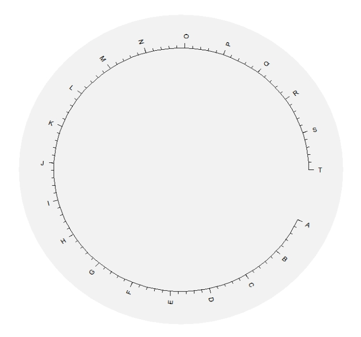
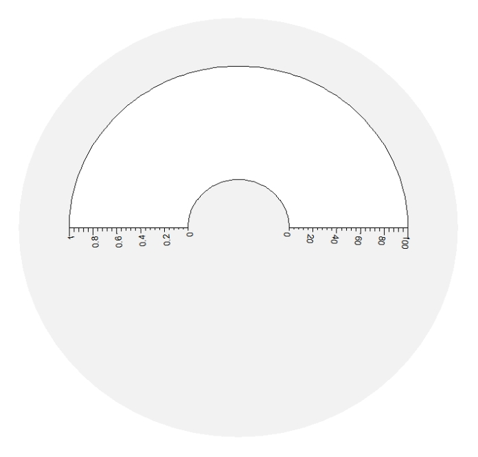
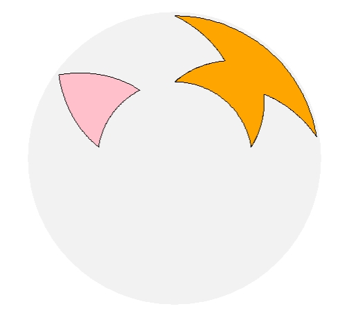
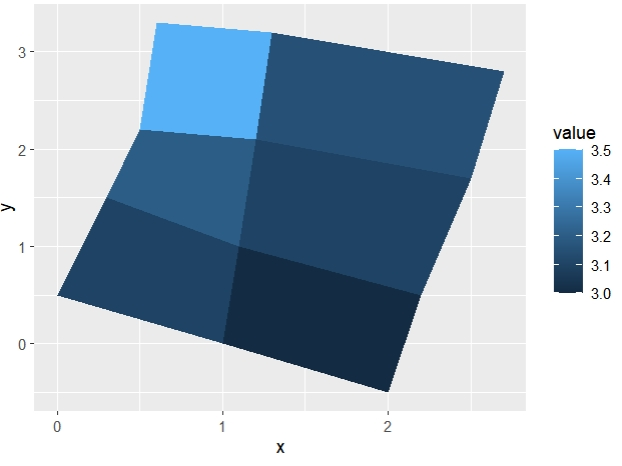

Chapter 2 Low level arcGrobs
Most geom layers are based on low level arcGrobs in ggciclize. This charpter we will describe the usage of these arcGrobs to better understand how the circular plot be created.
2.1 arcSectorGrob
arcSectorGrob draws arc rectangle in unit circle.
start,end control the sector size of the rectangle:
library(ggcirclize)
library(ggplot2)
library(grid)
newpage()
grid.draw(arcSectorGrob(start = 0,end = 180))
r0,r1 control the radius of the rectangle:
extend.xscale and extend.yscale control the extension of the xscale and yscale:
newpage()
grid.draw(arcSectorGrob(start = 0,end = 270,
r0 = 0.3,r1 = 0.8,
extend.xscale = 0,extend.yscale = 0))
sector.gp controls the graphics of rectangle:
newpage()
grid.draw(arcSectorGrob(start = 0,end = 270,
r0 = 0.3,r1 = 0.8,
add.xaxis = F,
add.yaxis = F,
extend.xscale = 0,extend.yscale = 0,
sector.gp = gpar(fill = "orange",col = NA)))Other parameter settings about axis can be passed in arcxAxisGrob.params and arcyAxisGrob.params arguments:
2.2 arcAxisGrob
arcAxisGrob draws arc axis in unit circle which includes xaxis and yaxis.
You should define the axis.type to tell which axis to be drawn and pos to tell where the axis position to be drawn:
newpage()
grid.draw(arcAxisGrob(start = 0,end = 350,
r0 = 0.5,r1 = 0.8,
extend.xscale = 0,
axis.type = "x",pos = "top"))breaks.n controls the numbers main ticks. nice.facing controls the axis labels rotation and the plot will be drawn on clockwise if clock.wise == TRUE:
newpage()
grid.draw(arcAxisGrob(start = 0,end = 350,
r0 = 0.5,r1 = 0.8,
extend.xscale = 0,
breaks.n = 15,
axis.type = "x",pos = "top",
nice.facing = T,
clock.wise = T))You can specify the xscale to define the xaxis range:
newpage()
grid.draw(arcAxisGrob(start = 0,end = 350,
r0 = 0.5,r1 = 0.8,
extend.xscale = 0,
axis.type = "x",pos = "top",
xscale = c(1,100),
breaks.n = 20))Change the tick labels by using breaks.label:
newpage()
grid.draw(arcAxisGrob(start = 0,end = 350,
r0 = 0.5,r1 = 0.8,
extend.xscale = 0,
axis.type = "x",pos = "top",
xscale = c(1,100),
breaks.n = 20,
breaks.label = LETTERS[1:20]))
minor.ticks.n controls the minor ticks number:
newpage()
grid.draw(arcAxisGrob(start = 0,end = 350,
r0 = 0.5,r1 = 0.8,
extend.xscale = 0,
axis.type = "x",pos = "top",
xscale = c(1,100),
breaks.n = 20,
breaks.label = LETTERS[1:20],
minor.ticks.n = 0))Change the position of axis:
newpage()
grid.draw(arcAxisGrob(start = 0,end = 350,
r0 = 0.5,r1 = 0.8,
extend.xscale = 0,
axis.type = "x",pos = "bottom"))Similar settings to the y axis:
newpage()
grid.draw(arcSectorGrob(start = 0,end = 180,
r0 = 0.2,r1 = 0.8,
extend.xscale = 0,
add.xaxis = F,add.yaxis = F))
grid.draw(arcAxisGrob(start = 0,end = 180,
r0 = 0.2,r1 = 0.8,
extend.xscale = 0,
axis.type = "y",pos = "left"))
grid.draw(arcAxisGrob(start = 0,end = 180,
r0 = 0.2,r1 = 0.8,
extend.xscale = 0,
axis.type = "y",pos = "right",
yscale = c(0,100),
breaks.n = 5))
Use the breaks and xscale to map correct axis position to the scale range:
newpage()
grid.draw(arcAxisGrob(start = 13,end = 177,
r0 = 0.5,r1 = 0.8,
extend.xscale = 0,
breaks.n = 10,
axis.type = "x",pos = "top",
nice.facing = T))
grid.draw(arcAxisGrob(start = 13,end = 177,
r0 = 0.6,r1 = 0.6,
extend.xscale = 0,
breaks = c(23,44,61,110,125,134,151),
xscale = c(13,177),
nice.facing = T,
axis.type = "x",pos = "top"))
grid.draw(arcAxisGrob(start = 13,end = 177,
r0 = 0.4,r1 = 0.4,
extend.xscale = 0,
breaks = seq(40,160,20),
xscale = c(13,177),
nice.facing = T,
axis.type = "x",pos = "top"))The same situation for y axis:
newpage()
grid.draw(arcSectorGrob(start = 30,end = 150,
r0 = 0.2,r1 = 1,
extend.yscale = 0,
add.xaxis = F,add.yaxis = F))
grid.draw(arcAxisGrob(start = 30,end = 150,
r0 = 0.2,r1 = 1,
extend.yscale = 0,
yscale = c(13,83),
axis.type = "y",pos = "left"))
grid.draw(arcAxisGrob(start = 30,end = 150,
r0 = 0.2,r1 = 1,
extend.yscale = 0,
yscale = c(13,83),
breaks = c(20,40,50,70),
axis.type = "y",pos = "right"))
grid.draw(arcSectorGrob(start = 30,end = 150,
r0 = 0.2,r1 = 1,
extend.yscale = 0,
clock.wise = T,
add.xaxis = F,add.yaxis = F))
grid.draw(arcAxisGrob(start = 30,end = 150,
r0 = 0.2,r1 = 1,
extend.yscale = 0,
yscale = c(13,83),
clock.wise = T,
axis.type = "y",pos = "left"))
grid.draw(arcAxisGrob(start = 30,end = 150,
r0 = 0.2,r1 = 1,
extend.yscale = 0,
yscale = c(13,83),
clock.wise = T,
breaks = seq(20,80,20),
axis.type = "y",pos = "right"))2.4 arcSegmentsGrob
arcSegmentsGrob draws arc segment in unit circle.
newpage()
grid.draw(arcSegmentsGrob(xmin = rep(1,10),xmax = rep(10,10),
ymin = 1:10,ymax = 1:10,
r0 = 0.5,r1 = 1,start = 0,end = 180))Oblique line in arc plot:
2.7 arcPolygonGrob
arcPolygonGrob draws arc polygon in uint circle.
First we draw a triangle in rectangular coordinate system:
And we show it in arc plot:
Draw multiple triangles:
x1 <- seq(0,23,1)
y1 <- rep(y,8)
newpage()
grid.draw(arcPolygonGrob(x = x1,y = y1,
id = rep(1:8,each = 3),
start = 0,end = 360,r0 = 0.5,r1 = 1))Draw different shape polygons:
newpage()
grid.draw(arcPolygonGrob(x = x,y = y,
start = 0,end = 180,r0 = 0.5,r1 = 1))
newpage()
grid.draw(arcPolygonGrob(x = c(0.1,0.2,0.3,0.4,0.5,0.4,0.7,0.6,0.7),
y = c(0.1,0.9,0.1,0.1,0.5,0.9,0.9,0.5,0.1),
id = c(rep("a",3),rep("b",6)),
polygon.gp = gpar(fill = c("pink","orange")),
start = 0,end = 180,r0 = 0.5,r1 = 1)) We show an example for ggplot2 output:
ids <- factor(c("1.1", "2.1", "1.2", "2.2", "1.3", "2.3"))
values <- data.frame(
id = ids,
value = c(3, 3.1, 3.1, 3.2, 3.15, 3.5)
)
positions <- data.frame(
id = rep(ids, each = 4),
x = c(2, 1, 1.1, 2.2, 1, 0, 0.3, 1.1, 2.2, 1.1, 1.2, 2.5, 1.1, 0.3,
0.5, 1.2, 2.5, 1.2, 1.3, 2.7, 1.2, 0.5, 0.6, 1.3),
y = c(-0.5, 0, 1, 0.5, 0, 0.5, 1.5, 1, 0.5, 1, 2.1, 1.7, 1, 1.5,
2.2, 2.1, 1.7, 2.1, 3.2, 2.8, 2.1, 2.2, 3.3, 3.2)
)
# Currently we need to manually merge the two together
datapoly <- merge(values, positions, by = c("id"))
p <- ggplot(datapoly, aes(x = x, y = y)) +
geom_polygon(aes(fill = value, group = id))
p
Re-write by using arcPolygonGrob:
2.8 arcLinksGrob
arcLinksGrob draws connection curves in unit circle.
It draws line connection when you supply single start and end. Band connection will be drawn when supplied with two degrees:
newpage()
grid.draw(arcLinksGrob(start = 0,end = 60,r = 1))
grid.draw(arcLinksGrob(start = 0,end = 300,r = 1))
grid.draw(arcLinksGrob(start = c(0,30),end = c(70,80),r = 1))
grid.draw(arcLinksGrob(start = c(350,360),end = c(260,270),r = 1))curve.height controls the line arc height:
newpage()
grid.draw(arcLinksGrob(start = 0,end = 60,r = 1,curve.height = 1))
grid.draw(arcLinksGrob(start = 0,end = 60,r = 1,curve.height = 0.5))Add arrows:
2.9 arcLinks2Grob
arcLinks2Grob is almost same as arcLinksGrob, besides, it can draw arc links with two different radius:
newpage()
grid.draw(arcLinks2Grob(start = c(0,15),end = c(300,320),
r0 = 0.6,r1 = 1,r = 1,
start.arrow = T,end.arrow = T))get_height can get relative curve height with the degrees(0-180):
newpage()
grid.segments(x0 = 0,x1 = 1,y0 = 0.5,y1 = 0.5)
grid.segments(x0 = 0.5,x1 = 0.5,y0 = 0,y1 = 1)
st <- sample(seq(0,360,10),10,replace = F)
ed <- sample(seq(0,360,10),10,replace = F)
for (th in 1:10) {
h <- get_height(st[th],ed[th],0.5,1)
grid.draw(arcLinks2Grob(start = st[th],end = ed[th],
curve.height = h,
r0 = 1,r1 = 1,r = 1))
}2.10 arcTextGrob
arcTextGrob draws curve text in unit circle.
newpage()
grid.draw(arcTextGrob(x = 1,y = 1,
labels = "This is a nice day today!",
start = 0,end = 180,r0 = 0.5,r1 = 1))Default nice.facing==TRUE:
newpage()
grid.draw(arcTextGrob(x = 1:20,y = rep(1,20),
labels = paste0("gene ",1:20),
curved.label = F,
start = 0,end = 360,r0 = 0.5,r1 = 1))Youcan turn it off:
newpage()
grid.draw(arcTextGrob(x = 1:20,y = rep(1,20),
labels = paste0("gene ",1:20),
curved.label = F,
nice.facing = F,
inward = T,
start = 0,end = 360,r0 = 1,r1 = 1))curved.label controls the labels whether be drawn in arc format: